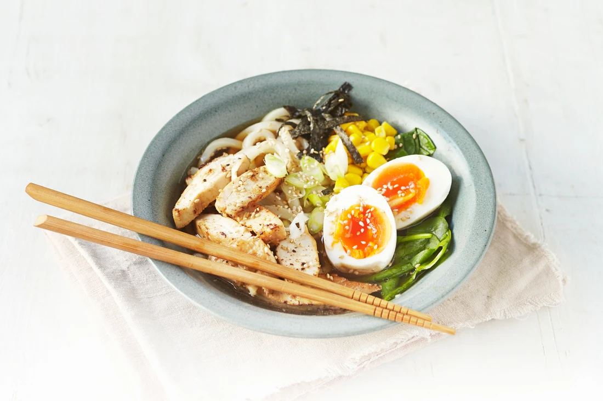
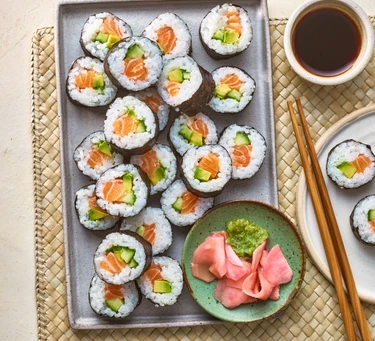
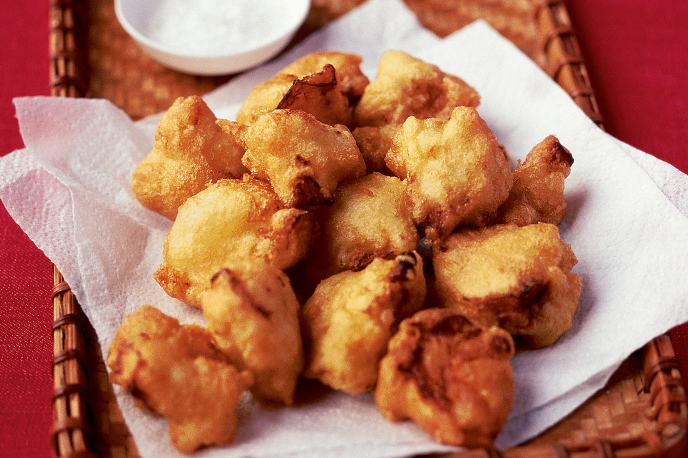
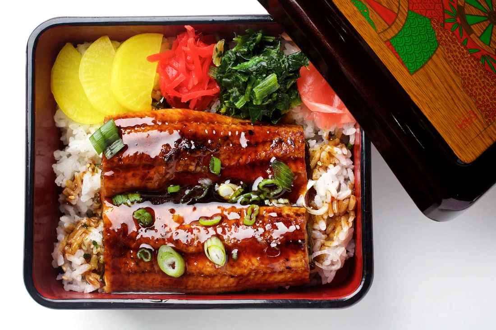
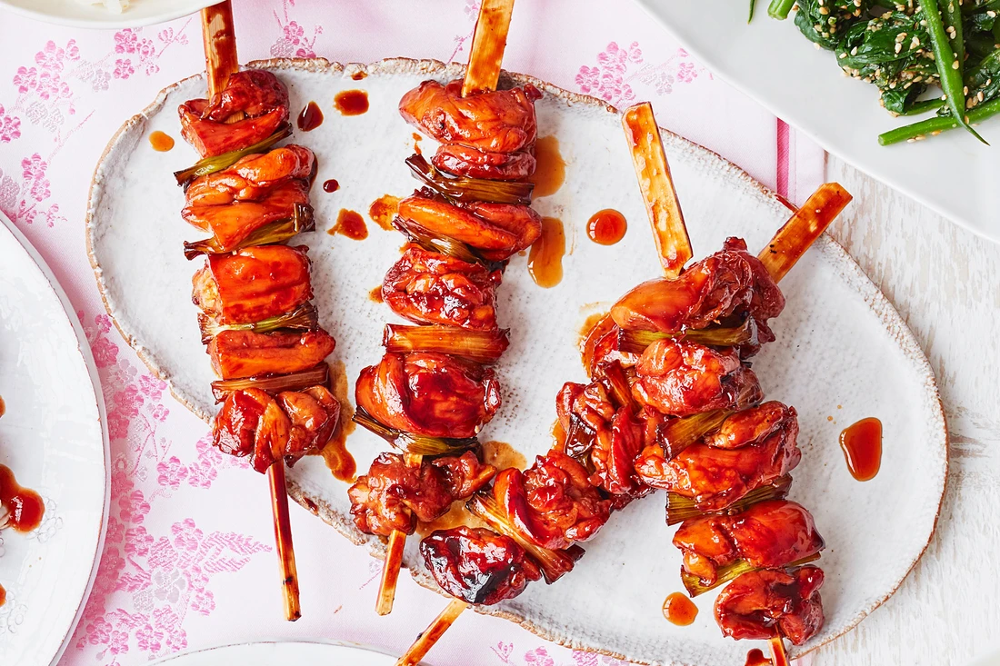

焼き鳥の風味
Ramen

In a pot, heat sesame oil and sauté garlic and ginger until fragrant. Add chicken or vegetable stock, water, soy sauce, and miso paste. Bring to a simmer and cook for 15 minutes. Boil the ramen noodles according to package instructions. Drain and set aside. Divide the noodles into serving bowls. Pour the hot broth over the noodles. Top with boiled eggs, chicken or tofu, nori strips, mushrooms, sweet corn, and green onions. Serve hot and enjoy your homemade ramen!
Ingredients:
For the Ramen Broth:
For the Noodles and Toppings:
Recipe:
Sushi

Rinse the sushi rice under cold water until the water runs clear. Cook in a pot with water or a rice cooker. Once cooked, mix the rice vinegar, sugar, and salt, and fold it into the rice. Allow it to cool. Place a sheet of nori on a bamboo mat. Spread a thin layer of rice over the nori, leaving a 1-inch border. Add fish, cucumber, and avocado in a line near one edge. Roll tightly using the bamboo mat. Slice the roll into bite-sized pieces with a sharp knife. Serve with pickled ginger, soy sauce, and wasabi.
Ingredients:
For Sushi Rice:
For the Sushi Rolls:
Recipe:
Tempura

In a bowl, beat the egg lightly. Add ice-cold water and mix. Gradually add flour, baking soda (if using), and salt. Stir gently until just combined; the batter should be slightly lumpy. Pat the shrimp and vegetables dry with a paper towel. Heat oil in a deep pan or fryer to 350°F (175°C). Dip the shrimp and vegetables into the batter, ensuring they are coated evenly. Fry in small batches until golden and crisp, about 2-3 minutes. Drain on paper towels. Serve hot with tempura dipping sauce on the side.
Ingredients:
For the Tempura Batter:
For the Tempura:
Recipe:
Unagi

In a small saucepan, combine soy sauce, mirin, sugar, and sake. Cook over medium heat until slightly thickened, about 5 minutes. Set aside. Preheat a grill or oven broiler. Brush the eel fillets with the prepared sauce and grill or broil until caramelized and heated through, about 4-5 minutes per side. Place the cooked eel over steamed white rice. Drizzle with extra sauce and garnish with chopped green onions or pickled ginger if desired.
Ingredients:
For the Unagi:
For Serving:
Recipe:
Yakitori

In a saucepan, combine soy sauce, mirin, sake, and sugar. Bring to a boil, then reduce heat and simmer until slightly thickened, about 10 minutes. Set aside. Thread chicken and green onion alternately onto the skewers. Preheat a grill or grill pan. Cook the skewers over medium heat, brushing with sauce and turning occasionally, until chicken is cooked through and lightly charred, about 8-10 minutes. Serve hot as an appetizer or main dish, with extra sauce on the side if desired.
Ingredients:
For Yakitori:
Recipe: